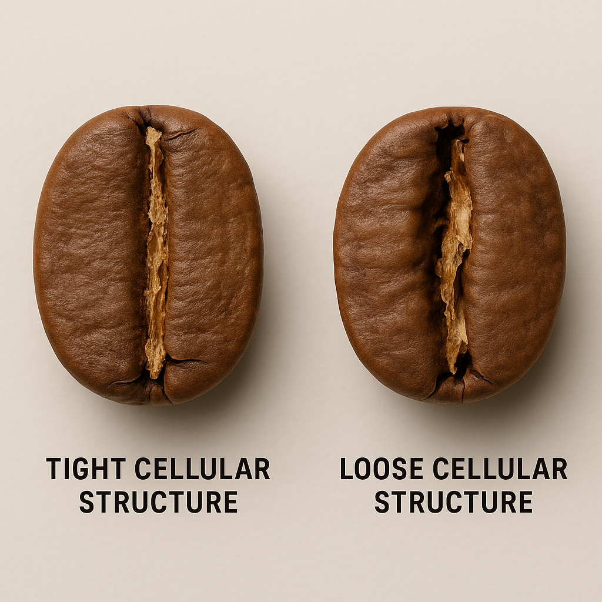

Lesson 1.3 – Bean Density & Moisture: How They Affect Roasting
Module 1: Introduction to Coffee Roasting
Lesson Objective
By the end of this lesson, you will understand:
How bean density and moisture content impact how coffee beans roast,
How these traits influence flavor, roast timing, and roast strategy,
How to observe and predict roasting behavior even before roasting starts.
New Terms and Concepts (Introduced Before Lesson)
| Term | Meaning |
|---|---|
| Density | How compact or solid a bean’s structure is — ratio of mass to volume. High density = hard, compact bean; low density = soft, airy bean. |
| Moisture Content | The percentage of water naturally present inside green coffee beans (ideal is 10–12%). |
| First Crack | The first loud popping sound during roasting, signaling rapid internal expansion. |
| Tipping | Tiny burnt spots on bean edges, caused by heating too quickly. |
| Scorching | Surface burns caused by excessive direct contact with hot metal (especially conduction). |
| Baking | A defect where beans taste flat or “bready” because the roast was too slow or stalled during development. |
| Quakers | Defective, immature beans that roast unevenly and taste flat or peanutty. |
| Thermal Load | The amount of heat energy needed to properly roast a given batch of coffee — influenced by bean moisture and density. |
Main Lesson Content
A. Why Density and Moisture Matter
Before roasting even begins, the green coffee’s physical traits set the stage:
Density affects how beans tend to absorb and respond to heat, though moisture, processing, screen size, and age also matter.
Moisture content affects how much energy is needed to drive out water and start chemical reactions.
These two traits influence:
How fast the roast progresses,
When first crack occurs,
Whether flavors are bright and clear — or dull and muddy,
How consistently a batch roasts.
In short: roasting is shaped before you even turn on the fire!
B. Understanding Bean Density
| Trait | High-Density Beans | Low-Density Beans |
|---|---|---|
| Structure | Hard, compact (small air pockets) | Softer, looser (more air pockets) |
| Origin | Often grown at high elevations (cooler temps, slower growth) | Often grown at low elevations (hotter temps, faster growth) |
| Roasting Behavior | Absorb heat steadily, resist sudden temperature spikes, allow for slower, controlled roasting | Heat quickly, risk tipping or scorching if pushed too hard |
| Flavor Outcome | Brighter, more acidic, complex flavors | Softer, simpler, sometimes flatter flavors |
Tip: A high-density bean can take a little more heat at the start. A low-density bean needs gentler handling early on.
C. Understanding Moisture Content
| Trait | High Moisture (>12%) | Low Moisture (<9%) |
|---|---|---|
| Roasting Impact | Needs more drying time; slower start to roasting | Dries too quickly; risks jumping stages too early |
| Risk | If not dried carefully, roast may stall later | If rushed, can tip, scorch, or lose sweetness |
| Flavor Impact | Cleaner, fresher notes if roasted well | Can taste hollow or burnt if mishandled |
Common moisture reference:
10-12% for many specialty coffees, but always interpret this with origin, process, storage, and supplier data.
Moisture below 9% or above 13% needs special care.
D. Home-Based Exercise – Comparing Green Bean Density
Try this simple home exercise to feel the difference between two green coffees:
Step 1:
Count and weigh 100 green beans from each batch.
Calculate the average weight per bean.
Step 2:
Drop both batches into separate clear glasses of room-temperature water.
Observe carefully:
Do they sink immediately or float?
Sinking fast suggests denser, healthier beans.
Floating suggests lower density — which could indicate quakers, defects, or poor maturation.
How quickly do they sink or absorb water?
Some beans might float initially if air is trapped, but good beans usually sink firmly after a few seconds.
Defective or porous beans may stay floating.
Important Notes:
This is only a rough observation activity, not a professional density test or buying decision.
Professional density is measured by controlled volume and weight methods, such as grams per liter.
E. Practical Impact on Roasting Strategy
| Trait | Typical Roast Behavior | How You Should Adjust |
|---|---|---|
| High Density | Slow, steady heat absorption; slower first crack | Start with slightly higher charge temperature, keep a steady heat build-up |
| Low Density | Quick heating; tipping and scorching risks | Start lower, use gentle heat ramp-up, avoid sudden surges |
| High Moisture | Longer drying phase needed | Extend drying phase carefully, don’t rush into browning |
| Low Moisture | Risk of fast roast, tipping | Shorter drying phase, monitor carefully during early stages |
Key Takeaways
High-density beans need energy but patience.
Low-density beans require care to avoid surface burns.
Moisture content mainly impacts the early drying phase, where water must be driven off safely.
You can begin developing your roast plan just by feeling, weighing, and observing your green beans — even before the heat is turned on!
Optional Practical Exercise
If you have access to green coffee samples:
Weigh and observe two different coffees.
Try the sink-or-float test.
Compare feel: Is one harder? Lighter? Denser?
Write down your guess: Which will need a slower start in roasting?
If you don’t have green beans:
Look for “light roast” and “dark roast” commercial beans.
Feel the difference in hardness (green would be even harder).
Practice noticing structure and density differences.
Reflection Prompt
If you had a dense, high-grown washed Ethiopian and a low-grown natural Brazil, how would your starting temperature and early heat application differ?
Which would you handle more carefully at the beginning of the roast?
(Think: slow-building steady heat vs. quick sensitive heat.)
Self-Check Quiz
| Question | Answer |
|---|---|
| 1. True or False: High-density beans roast faster than low-density ones. | False — High-density beans roast slower, absorbing heat steadily. |
| 2. True or False: A coffee with 13% moisture will likely need a shorter drying phase. | False — It will need a longer drying phase. |
| 3. Which has higher likely density: (a) Brazilian Natural Robusta (900m) or (b) Washed Ethiopian Yirgacheffe (2,000m)? | (b) Washed Ethiopian Yirgacheffe. |
| 4. True or False: Low-moisture beans require a longer drying phase. | False — They dry quickly and need shorter early phases. |
End of Lesson 1.3
Self-study caution
Elevation, density, and moisture are related, but not identical. Variety, processing, screen size, age, storage, and defects also change how coffee absorbs heat.
Before you continue
- You can explain why dense and low-density beans may need different starts.
- You understand the sink-or-float exercise is only an observation activity.
- You know not to accept or reject green coffee from one informal test.
Roast log prompt
Write one short note for each cue you can observe: time, color, aroma, sound, heat change, and cup result. If you cannot roast yet, use the same format while watching a roasting video or tasting two commercial coffees side by side.
